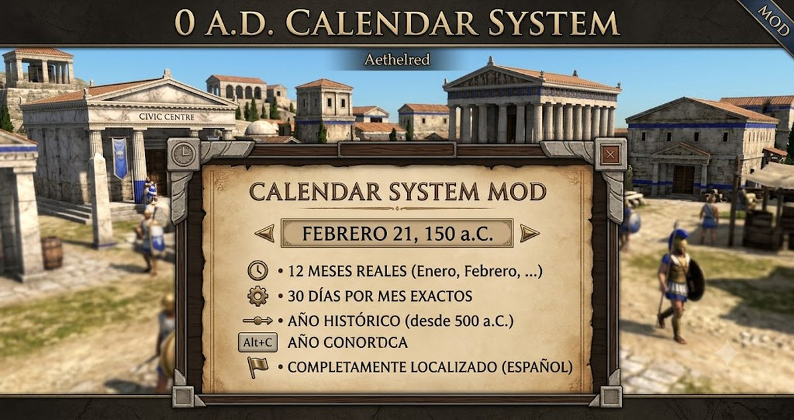

Calendar System
⬇️ Descargar Mod"Cada día cuenta en la historia de tu imperio"
Añade un calendario completo al HUD que muestra la fecha virtual (día, mes y año) sincronizada con el ciclo día/noche. Cada ciclo equivale a un día del calendario. El año comienza en el 500 a.C. y avanza hacia la era actual.
📝 Descripción Detallada
Calendar System extiende el Day/Night Cycle añadiendo un calendario histórico que da contexto temporal a tu partida. Usa la duración del ciclo día/noche como base para calcular días, meses y años.
Cómo funciona: Cada ciclo día/noche completo equivale a 1 día del calendario. Los meses tienen 30 días cada uno, y el año tiene 12 meses (360 días por año). La fecha se muestra en el HUD con el formato "Day 15, March, 500 BC".
Línea de tiempo: El calendario comienza en el año 500 a.C. y cuenta hacia atrás. Cuando llega al año 0, continúa hacia la era d.C. Así que pasarás del 500 a.C. al 499 a.C., etc., hasta llegar al 1 d.C., 2 d.C. y así sucesivamente.
✨ Características Principales
- Calendario en el HUD: Muestra día, mes y año sincronizado con el ciclo día/noche
- 12 meses reales: Enero, Febrero, Marzo, Abril, Mayo, Junio, Julio, Agosto, Septiembre, Octubre, Noviembre, Diciembre
- 30 días por mes: Cada mes tiene exactamente 30 días
- Año histórico: Comienza en el 500 a.C. y progresa hacia el presente
- Se puede activar/desactivar: Hotkey Alt+C configurado por defecto
- Completamente localizado: Nombres de meses y eras en español ("enero", "a.C.", "d.C.")
- Dependencia: Requiere Day/Night Cycle v0.2.0 o superior instalado y activado
🎯 ¿Qué Esperar de Este Mod?
Con este mod podrás:
- Saber en qué fecha del año virtual te encuentras mientras juegas
- Ver el paso del tiempo en términos de días, meses y años reales
- Planificar tus campañas con un sentido histórico del tiempo
- Activar o desactivar el calendario con Alt+C
🔍 ¿Dónde Encontrarlo en el Juego?
El calendario se muestra en la barra de sesión del HUD, junto al reloj de Day/Night Cycle.
Activar/desactivar: Presiona Alt+C para mostrar u ocultar el calendario.
Importante: El mod Day/Night Cycle debe estar instalado y activado para que funcione.
⚙️ Información de Compatibilidad
Requisito: Necesita Day/Night Cycle instalado y activado (obtiene la duración del ciclo del reloj).
Nota: Los textos del calendario usan el sistema de localización de 0 A.D. El idioma se cambia desde las opciones del juego.
📋 Instrucciones de Instalación
- Descarga el mod: Haz clic en el botón de descarga de arriba.
- Asegúrate de tener Day/Night Cycle: Este mod requiere el mod Day/Night Cycle instalado (descárgalo desde su página).
- Busca la carpeta de 0 A.D.: Generalmente está en:
- Windows:
C:\Users\[TuUsuario]\Documents\My Games\0ad\mods - Linux:
~/.local/share/0ad/mods - Mac:
~/Library/Application Support/0ad/mods
- Windows:
- Crea una carpeta para el mod: Si no existe, crea una carpeta llamada
calendar_systemdentro de la carpeta "mods". - Copia los archivos: Extrae el archivo descargado y copia su contenido dentro de la carpeta
calendar_system. - Abre 0 A.D.: Inicia el juego.
- Activa ambos mods: Ve a Opciones → Mods, busca "Calendar System" y "Day/Night Cycle" y actívalos.
- ¡Listo! El calendario aparecerá automáticamente en tu HUD junto al reloj.
👥 Créditos
Autor: freddyeleazar
Versión: 0.1.0
Licencia: GPL v2 (como 0 A.D.)